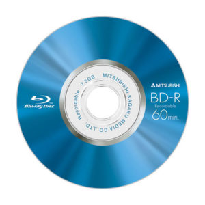

ВОССТАНОВЛЕНИЕ ДАННЫХ С DVD, CD, BLU-RAY

Сейчас оптические носители используются всё меньше — их упорно вытесняют флэш накопители. Этому конечно способствует такой немаловажный факт как цена. Поэтому чаще всего диски используют как резервное хранилище. Многие до сих пор уверены, что если производитель говорит о десятках лет хранения, то это правда. Конечно, если диск содержать в идеальных условиях, то такое вполне возможно, но многие ли могут такое себе позволить? Конечно, нет. Особенно если диск периодически используется, деградация поверхности неизбежна — мелкий царапинки, сколы и так далее — всё это постепенно приводит к тому, что в один прекрасный день диск просто перестаёт считываться.
Восстановление информации с CD, DVD дисков обходится дешевле, чем
восстановление с жёсткого диска, имеющего механические повреждения.
Наиболее частая проблема, с который мы сталкиваемся при восстановлении
данных с компакт-дисков, это царапины. Пластик, используемый при
производстве дисков не отличается высокой устойчивостью к механическим
повреждениям. Отсюда вытекают частые проблемы с нечитаемостью — царапины
преломляют свет, выпущенный излучателем в приводе и отражатель либо не
получает ответа, либо получает некорректные данные.
Бывают серьезные случаи — диск сломали пополам, ужасно исцарапан,
обожжен или долго пролежал на солнце. В таких печальных ситуациях чаще
всего остается только развести руками — информацию уже не достать
никаким чудесным прибором. Причина тому — повреждение или полная утрата
информационного слоя.
Физическое повреждение поликарбонатного слоя на диске Blu-Ray еще более
критично, т.к. он имеет самый маленький размер сектора по сравнению с CD
и DVD.
Стоимость
#
Проблема
Стоимость, руб.
1
Диагностика:
Бесплатно
2
Доставка накопителя по городу Набережные Челны:
Бесплатно
3
Копирование информации на носитель заказчика:
Бесплатно
4
Хранение резервной копии данных в течении 3-х дней:
Бесплатно
5
Логические неисправности (не финиширована запись, некорректно записан и т.п.):
от 2500 руб
6
Физические повреждения (царапины, сколы и т.п.):
от 4000 руб